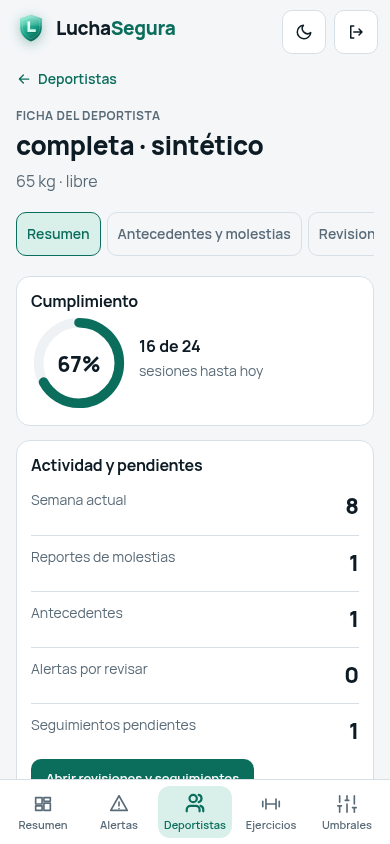
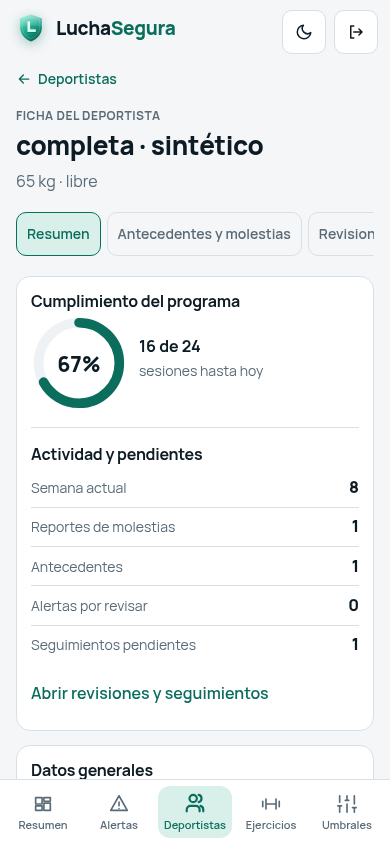
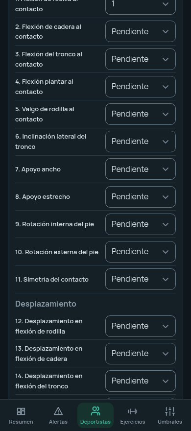
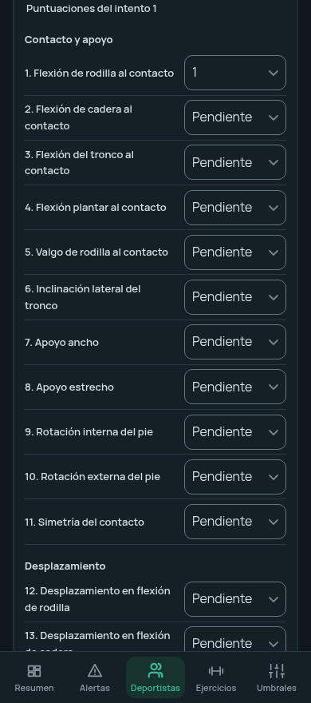
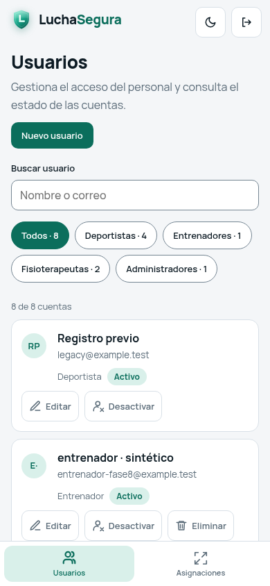
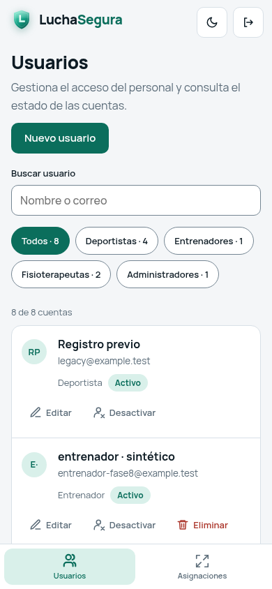

Fase 11.2 · Antes y después
Capturas de Brave con datos sintéticos. Selecciona una imagen para abrirla a tamaño completo.
Ficha profesional · 390 px · claro




LESS · 390 px · oscuro





Usuarios · 390 px · claro



